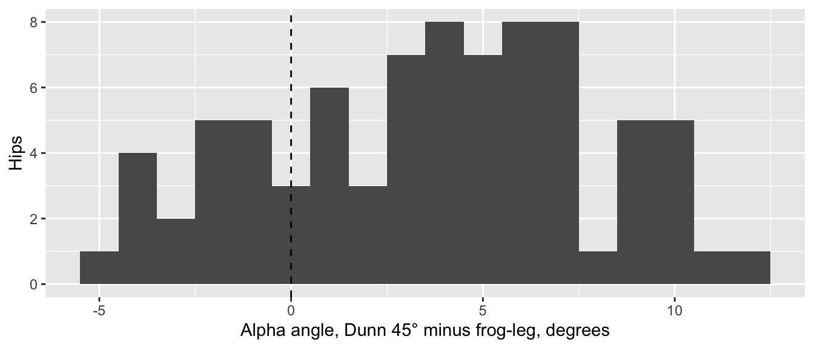
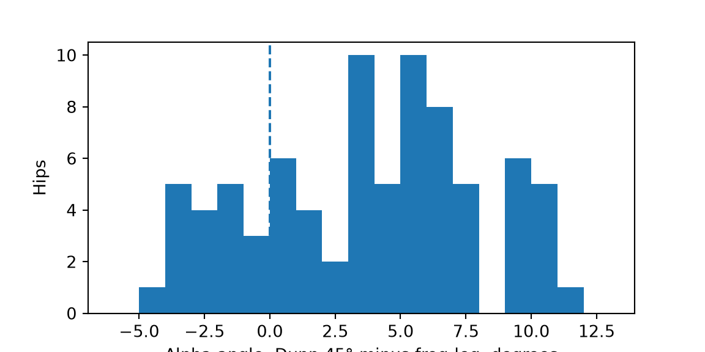

t-Test für gepaarte Stichproben, Wilcoxon-Vorzeichen-Rang-Test, McNemar-Test und stratifizierte Cox-Regression: dieselben Patientinnen und Patienten zweimal gemessen, oder gematchte Paare.
Gepaarte Daten kommen in Zweiergruppen, die zusammengehören: dieselbe Person vor und nach der Operation, zwei Röntgenaufnahmen derselben Hüfte, zwei Beurteilende, die dasselbe Röntgenbild ausmessen, oder zwei Personen, die einander nach Alter, Geschlecht und BMI (Body-Mass-Index) zugeordnet wurden (gematcht). Gepaarte Tests vergleichen jede Person mit sich selbst (oder mit ihrem Match) und entfernen so die Variation zwischen den Personen, mit der Tests für unabhängige Gruppen zurechtkommen müssen. Wenn Ihre beiden Gruppen aus verschiedenen Personen bestehen, verwenden Sie stattdessen Seite 6.
Hinweis💡 So funktioniert jeder Abschnitt dieser Seite
Jeder Abschnitt beantwortet eine Frage zu den Übungsdaten. Der erste Codeblock eines Abschnitts lädt die Packages und die Daten, sodass Sie direkt zum gewünschten Abschnitt springen können. Führen Sie die Blöcke eines Abschnitts der Reihe nach von oben nach unten aus.
Damit der Code kurz bleibt, verwenden die Beispiele zum Gelenkersatz alle Fälle, auch die 80 Patientinnen und Patienten, die auf beiden Seiten operiert wurden. Entscheiden Sie in einer echten Studie, wie Sie mit ihnen umgehen (Seite 3), und halten Sie fest, was Sie getan haben.
Warnung⚠️ Achtung: Nur vollständige Paare zählen
Ein gepaarter Test kann nur Personen verwenden, die zu beiden Zeitpunkten gemessen wurden. Wer eine Kontrolle verpasst hat, fällt heraus, und wenn sich diese Personen vom Rest unterscheiden (zum Beispiel, wenn Personen mit schlechtem Verlauf nicht mehr kommen), ist das Resultat verzerrt. Berichten Sie immer, wie viele Patientinnen und Patienten beide Messungen hatten. Gemischte Modelle können die Daten aller Personen verwenden, auch bei unvollständiger Nachbeobachtung.
t-Test für gepaarte Stichproben
Die Frage: Ergeben die Lauenstein-Aufnahme (Frog-Leg) und die Dunn-45°-Aufnahme in denselben Hüften unterschiedliche Alpha-Winkel?
Wann verwenden
Jede Person (oder jedes gematchte Paar) liefert zwei Messungen derselben Grösse: hier den Alpha-Winkel derselben Hüfte auf zwei Röntgenaufnahmen.
Die Differenzen zwischen den beiden Messungen sind ungefähr normalverteilt, oder es gibt etwa 30 oder mehr Paare. Die Voraussetzung betrifft die Differenzen, nicht jede Messung für sich.
Der Alpha-Winkel misst, wie stark sich der vordere Teil des Kopf-Hals-Übergangs am Femur vorwölbt (Cam-Morphologie): Je grösser der Winkel, desto grösser die Vorwölbung. Die Daten zur Hüfterhaltung enthalten eine Zeile pro Hüfte (eine Hüfte pro Person) von jungen Erwachsenen, die für eine hüfterhaltende Operation abgeklärt wurden, mit dem Alpha-Winkel auf zwei Aufnahmen: der Lauenstein-Aufnahme (Frog-Leg) und der Dunn-45°-Aufnahme.
Gepaarte Daten müssen im Breitformat vorliegen: eine Zeile pro Person, mit den beiden Messungen nebeneinander. Diese Daten tun das bereits; Seite 1 zeigt, wie man Daten umformt, bei denen das nicht so ist.
library(tidyverse)imaging <-read_csv("data/hip_preservation_imaging.csv", show_col_types =FALSE) |># eine Zeile pro Hüftemutate(difference = alpha_dunn45_deg - alpha_frogleg_deg) # Dunn minus Frog-Legnrow(imaging)
[1] 80
sum(is.na(imaging$difference)) # Hüften, bei denen eine der beiden Aufnahmen fehlt
[1] 0
ggplot(imaging, aes(difference)) +geom_histogram(binwidth =1) +geom_vline(xintercept =0, linetype ="dashed") +# keine Differenzlabs(x ="Alpha angle, Dunn 45° minus frog-leg, degrees", y ="Hips")

import pandas as pdimport matplotlib.pyplot as pltfrom scipy import statsimaging = pd.read_csv("data/hip_preservation_imaging.csv") # eine Zeile pro Hüfteimaging["difference"] = imaging["alpha_dunn45_deg"] - imaging["alpha_frogleg_deg"] # Dunn minus Frog-Legprint(len(imaging), imaging["difference"].isna().sum()) # Hüften, und Hüften, bei denen eine der beiden Aufnahmen fehlt
80 0
fig, ax = plt.subplots(figsize=(6, 3))ax.hist(imaging["difference"], bins=range(-6, 14))ax.axvline(0, linestyle="--") # keine Differenzax.set_xlabel("Alpha angle, Dunn 45° minus frog-leg, degrees")ax.set_ylabel("Hips")plt.show()

Alle 80 Hüften haben beide Aufnahmen. Die Differenzen bilden einen ungefähr symmetrischen Hügel, dessen Mitte rechts von null liegt: Die meisten Hüften messen auf der Dunn-Aufnahme höher.
alpha_test <-t.test(imaging$alpha_dunn45_deg, imaging$alpha_frogleg_deg, paired =TRUE) # Dunn minus Frog-Legalpha_test
Paired t-test
data: imaging$alpha_dunn45_deg and imaging$alpha_frogleg_deg
t = 7.7457, df = 79, p-value = 2.724e-11
alternative hypothesis: true mean difference is not equal to 0
95 percent confidence interval:
2.725968 4.611532
sample estimates:
mean difference
3.66875
alpha_test = stats.ttest_rel(imaging["alpha_dunn45_deg"], imaging["alpha_frogleg_deg"]) # Dunn minus Frog-Legprint(alpha_test)
t = 7.75, df = 79: Die mittlere Differenz ist fast 8 Standardfehler von null entfernt; df ist die Anzahl der Paare minus 1.
p < 0.001: Eine so grosse Differenz wäre sehr unwahrscheinlich, wenn die beiden Aufnahmen im Mittel denselben Alpha-Winkel ergäben.
mean difference 3.67: Im Mittel lag der Wert auf der Dunn-Aufnahme 3.7° höher als auf der Lauenstein-Aufnahme derselben Hüfte.
95% CI 2.73 to 4.61: das Konfidenzintervall (KI) für die mittlere Differenz.
Effektstärke und 95%-KI
Die Mittelwertsdifferenz mit ihrem KI, in Grad: 3.7° (95%-KI 2.7 bis 4.6).
Cohens dz teilt die Mittelwertsdifferenz durch die Standardabweichung der Differenzen: wie einheitlich sich die beiden Aufnahmen über die Hüften hinweg unterscheiden. Die übliche Richtschnur (0.2 klein, 0.5 mittel, 0.8 gross) gilt auch hier.
dz = 0.87 ist ein grosser Effekt: 62 der 80 Hüften (78 %) messen auf der Dunn-Aufnahme höher. Das ist in der Klinik wichtig, weil eine Cam-Morphologie oft über einen Alpha-Winkel oberhalb eines Schwellenwerts definiert wird. Bei einem Schwellenwert von 55° gelten 56 Hüften auf der Dunn-Aufnahme als Cam-positiv und 48 auf der Lauenstein-Aufnahme. Geben Sie an, auf welcher Aufnahme Sie gemessen haben.
Resultate formulieren
Methods: The alpha angle on the Dunn 45° and frog-leg views of the same hip was compared with a paired t test.
Results: In 80 hips, the mean alpha angle was 61.8° (SD 11.2) on the Dunn 45° view and 58.2° (SD 10.8) on the frog-leg view (mean difference 3.7°, 95% CI 2.7 to 4.6; dz = 0.87, 95% CI 0.61 to 1.12; p < 0.001).
Warnung⚠️ Achtung: Analysieren Sie gepaarte Daten nicht wie unabhängige Gruppen
Ein t-Test für unabhängige Stichproben auf den beiden Spalten ignoriert, welche Messwerte zur selben Hüfte gehören. Hier ergibt er p = 0.037 statt p < 0.001: Die Differenz von 3.7° zwischen den Aufnahmen ist klein neben der Streuung von 11° zwischen den Hüften, und nur der gepaarte Test nimmt diese Streuung heraus. Er ist auch dann falsch, wenn er zufällig dieselbe Antwort liefert, denn sein Standardfehler setzt 160 unabhängige Hüften voraus, obwohl es nur 80 sind.
Tipp🔀 R oder Python: gepaarte Effektstärken
compute_effsize(x, y, paired=True) von pingouin gibt nicht dz zurück: Es gibt dav zurück (die Mittelwertsdifferenz geteilt durch die Quadratwurzel aus dem Mittelwert der beiden Varianzen), hier 0.33. Beide sind zulässig, beantworten aber verschiedene Fragen und sind nicht austauschbar: dav vergleicht die Differenz damit, wie stark sich die Hüften untereinander unterscheiden, dz damit, wie einheitlich sich die beiden Aufnahmen innerhalb einer Hüfte unterscheiden. Wir berechnen dz direkt, damit die beiden Sprachen übereinstimmen; geben Sie an, welches Sie berichten.
Wilcoxon-Vorzeichen-Rang-Test
Die Frage: Hat sich der KOOS JR (Score für Knie-Gelenkersatz, Kurzform) von vor der Operation bis 1 Jahr nach einem Kniegelenkersatz verbessert?
Wann verwenden
Zwei gepaarte Messungen, und die Zielgrösse ist schief oder hat einen Decken- oder Bodeneffekt. Der KOOS JR nach 1 Jahr hat einen Deckeneffekt (Seite 3).
Zählen Sie bei einer ordinalen Skala (Zufriedenheit von 1 bis 5) die Personen, deren Wert gestiegen beziehungsweise gesunken ist, und vergleichen Sie die beiden Anzahlen mit einem Binomialtest (dem Vorzeichentest, Seite 5).
Er bringt die Grössen der Veränderungen in eine Rangfolge und vergleicht die Ränge der Verbesserungen mit den Rängen der Verschlechterungen.
Veränderungen von genau null enthalten keine Information über die Richtung und werden weggelassen.
Alle 246 Patientinnen und Patienten mit beiden Scores haben sich verbessert. (Echte Daten sind selten so aufgeräumt: Meist verschlechtert sich eine Minderheit der Personen. Diese Daten sind synthetisch.)
koos_test <-wilcox.test(koos$koos_1yr, koos$koos_preop, paired =TRUE,exact =FALSE, correct =FALSE, # siehe den Kasten «R oder Python»conf.int =TRUE) # ergänzt den Hodges-Lehmann-Schätzer und das KIkoos_test
Wilcoxon signed rank test
data: koos$koos_1yr and koos$koos_preop
V = 30381, p-value < 2.2e-16
alternative hypothesis: true location shift is not equal to 0
95 percent confidence interval:
32.29998 35.90004
sample estimates:
(pseudo)median
34.10001
# pg.wilcoxon() führt den Test von scipy aus und ergänzt die biseriale Rangkorrelation als Effektstärkekoos_test = pg.wilcoxon(koos["1yr"], koos["preop"], method="approx", correction=False) # siehe den Kasten «R oder Python»print(koos_test)
V = 30381 (R): die Summe der Ränge der Verbesserungen. Bei 246 Personen ergeben die Ränge zusammen 246 × 247 / 2 = 30381, sodass jeder Rang zu einer Verbesserung gehört. Python gibt die kleinere Summe an, die der Verschlechterungen: W_val = 0.
p < 0.001.
(pseudo)median 34.1, 95% CI 32.3 to 35.9: der Hodges-Lehmann-Schätzer der typischen Veränderung, siehe unten.
RBC = 1.0 (Python): die biseriale Rangkorrelation als Effektstärke, siehe unten.
Effektstärke und 95%-KI
Der Hodges-Lehmann-Schätzer der Veränderung (der Median der Mittelwerte aller Paare von Veränderungen) mit seinem KI, in Punkten.
Die biseriale Rangkorrelation (r) für gepaarte Daten: +1, wenn sich alle Personen verbessert haben, −1, wenn sich alle Personen verschlechtert haben, 0, wenn sich Verbesserungen und Verschlechterungen die Waage halten. Hier ist sie genau 1.
r (rank biserial) | 95% CI
--------------------------------
1 | [1.00, 1.00]
# Hodges-Lehmann-Schätzer: der Median der Mittelwerte aller Paare von Veränderungendef hodges_lehmann(x): x = np.asarray(x) i, j = np.triu_indices(len(x)) # alle Paare, auch jede Veränderung mit sich selbstreturn np.median((x[i] + x[j]) /2)print(hodges_lehmann(koos["change"]))
34.1
# scipy hat dafür kein KI, also ein Bootstrap: auf 9999 neu gezogenen Datensätzen neu berechnenboot = stats.bootstrap((koos["change"].to_numpy(),), hodges_lehmann, vectorized=False, rng=np.random.default_rng(2026))print(boot.confidence_interval)
print(koos_test["RBC"]) # biseriale Rangkorrelation r
Wilcoxon 1.0
Name: RBC, dtype: float64
Resultate formulieren
Methods: Because 1-year KOOS JR scores showed a ceiling effect, change from before surgery was assessed with the Wilcoxon signed-rank test, with the Hodges-Lehmann estimate of the change and its 95% CI as the effect size.
Results: In all 246 patients with both scores, the change was positive. Median KOOS JR was 50.0 (IQR 40.8 to 58.2) before surgery and 85.8 (IQR 75.0 to 94.0) at 1 year (Hodges-Lehmann estimate of the change 34.1 points, 95% CI 32.3 to 35.9; p < 0.001).
Warnung⚠️ Achtung: «Signifikante Verbesserung» ist nicht die ganze Geschichte
Ein winziger p-Wert sagt, dass die Scores im Durchschnitt gestiegen sind; er sagt nicht, wie viele Patientinnen und Patienten sich um einen bedeutsamen Betrag verbessert haben. Berichten Sie bei patientenberichteten Messinstrumenten (PROMs) auch den Anteil der Personen, deren Veränderung die minimale klinisch relevante Differenz (MCID) erreichte, eine Schwelle innerhalb der Person (Seite 3).
Tipp🔀 R oder Python: Standardwerte beim Wilcoxon-Test
Die Teststatistik. R gibt V an, die Summe der Ränge der positiven Veränderungen. scipy (und pingouin) geben die kleinere der beiden Summen an. Die p-Werte stimmen überein.
Exakt oder näherungsweise. R verwendet bei weniger als 50 Paaren ohne Bindungen einen exakten p-Wert und fügt der Normalapproximation eine Stetigkeitskorrektur hinzu; die Standardwerte von scipy sind anders. Wir setzen exact = FALSE, correct = FALSE in R und method="approx", correction=False in Python, damit beide übereinstimmen.
Das Hodges-Lehmann-KI. R berechnet es durch Umkehrung des Tests; der Python-Code verwendet einen Bootstrap, also eine andere Methode. Hier stimmen sie auf zwei Dezimalstellen überein (32.30 bis 35.90), wie auf Seite 6, bei anderen Daten können sie aber leicht voneinander abweichen.
McNemar-Test
Die Frage: Ist die Wahrscheinlichkeit, eine Gehhilfe zu benutzen, 6 Wochen nach der Operation höher als davor?
Wann verwenden
Eine Ja/Nein-Zielgrösse, die zweimal bei denselben Personen gemessen wird (oder einmal bei jedem Mitglied eines gematchten Paars).
Er verwendet nur die diskordanten Paare: die Personen, bei denen sich etwas verändert hat (nein → ja oder ja → nein). Personen, bei denen alles gleich blieb, sagen nichts über die Richtung der Veränderung aus.
Die Chi-Quadrat-Version braucht insgesamt mindestens etwa 10 diskordante Paare. Bei weniger verwenden Sie die exakte Version (siehe den Kasten «R oder Python»).
Zuerst die Daten ansehen
Bei gepaarten Ja/Nein-Daten heisst «Ansehen», eine 2 × 2-Tabelle vorher × nachher zu betrachten: Jede Person kommt darin einmal vor.
print(aid[["preop", "6wk"]].mean()) # Anteil der Personen mit Gehhilfe
visit
preop 0.352475
6wk 0.596040
dtype: float64
Von 505 Patientinnen und Patienten, die bei beiden Kontrollen gesehen wurden, hatten 134 nie eine Gehhilfe und 108 zu beiden Zeitpunkten eine. Bei den übrigen 263 veränderte sich etwas: 193 begannen, eine Gehhilfe zu benutzen, und 70 hörten auf.
McNemar’s chi-squared = 56.6, df = 1: wie unausgewogen die Aufteilung 193 gegen 70 ist, verglichen mit der gleichmässigen Aufteilung, die man erwarten würde, wenn sich die Benutzung der Gehhilfe nicht verändert hätte.
p < 0.001.
Effektstärke und 95%-KI
Die Effektstärke beim McNemar-Test ist das Odds Ratio der diskordanten Paare: Personen, die begannen, eine Gehhilfe zu benutzen, geteilt durch Personen, die aufhörten, 193 / 70. Sein exaktes KI stammt aus einem Binomialtest auf den diskordanten Paaren.
started <- aid_table["0", "1"] # vorher keine Gehhilfe, nach 6 Wochen eine Gehhilfestopped <- aid_table["1", "0"] # vorher eine Gehhilfe, nach 6 Wochen keine Gehhilfestarted / stopped # Odds Ratio der diskordanten Paare
[1] 2.757143
ci <-binom.test(started, started + stopped)$conf.int # KI für den Anteil der Personen mit Wechsel, die begannenci / (1- ci) # umgerechnet in ein KI für das Odds Ratio
started =int(aid_table.loc[0, 1]) # vorher keine Gehhilfe, nach 6 Wochen eine Gehhilfestopped =int(aid_table.loc[1, 0]) # vorher eine Gehhilfe, nach 6 Wochen keine Gehhilfeprint(started / stopped) # Odds Ratio der diskordanten Paare
2.757142857142857
ci = stats.binomtest(started, started + stopped).proportion_ci(method="exact") # Anteil der Personen mit Wechsel, die begannenprint(ci.low / (1- ci.low), ci.high / (1- ci.high)) # umgerechnet in ein KI für das Odds Ratio
2.0871688376583153 3.6782978561318966
Patientinnen und Patienten begannen 2.8-mal so häufig, eine Gehhilfe zu benutzen, wie sie aufhörten (95%-KI 2.1 bis 3.7).
Resultate formulieren
Methods: Walking-aid use before surgery and at 6 weeks was compared with McNemar’s test, with the discordant-pair odds ratio and its exact 95% CI as the effect size.
Results: Among 505 patients assessed at both visits, 35.2% used a walking aid before surgery and 59.6% at 6 weeks; 193 patients started and 70 stopped using an aid (discordant-pair odds ratio 2.76, 95% CI 2.09 to 3.68; p < 0.001).
Warnung⚠️ Achtung: Kein Chi-Quadrat-Test und kein Test nach Fisher bei gepaarten Ja/Nein-Daten
Ein häufiger Fehler ist, «Gehhilfe ja/nein» gegen «präoperativ / 6 Wochen» zu kreuztabellieren und einen gewöhnlichen Chi-Quadrat-Test durchzuführen. Diese Tabelle zählt jede Person zweimal, als hätte man 1010 unabhängige Patientinnen und Patienten untersucht. Der McNemar-Test verwendet jede Person einmal, über die Tabelle vorher × nachher.
Tipp🔀 R oder Python: Chi-Quadrat oder exakt?
mcnemar.test() in R gibt die Chi-Quadrat-Version an, mit einer Stetigkeitskorrektur, ausser Sie setzen correct = FALSE. mcnemar() in statsmodels gibt die exakte (binomiale) Version an, ausser Sie setzen exact=False. Bei wenigen diskordanten Paaren (unter etwa 10) ist die exakte Version die richtige: Führen Sie in R binom.test(started, started + stopped) aus.
Stratifizierte Cox-Regression
Die Frage: Ist bei Patientinnen und Patienten, die nach Eingriff, Alter, Geschlecht, BMI und ASA-Klasse gematcht wurden, das Revisionsrisiko mit Implantat C höher als mit Implantat A?
Wann verwenden
Die Zielgrösse ist die Zeit bis zu einem Ereignis, und die Patientinnen und Patienten bilden gematchte Paare (oder Gruppen), oder die beiden «Fälle» sind die beiden Gelenke einer Person.
Ein nach Paaren stratifiziertes Cox-Modell gibt jedem Paar seinen eigenen Baseline-Hazard und vergleicht die Implantate nur innerhalb der Paare. Die Entscheidungstabelle nennt das bedingte Regression mit proportionalen Hazards.
Nur Paare, in denen eine Person revidiert wurde, während die andere noch nachbeobachtet wurde, sagen dem Modell etwas; bei wenigen Ereignissen ist ein breites KI zu erwarten.
Seite 14 behandelt die Cox-Regression ausführlich.
Zuerst die Daten ansehen
Die gematchte Datei hat eine Zeile pro Person und eine set_id, die jede gematchte Gruppe gemeinsam hat. Jede Gruppe enthält eine Person mit jedem Implantat (A, B und C); hier behalten wir A und C, wodurch Paare entstehen.
set_id implant age sex bmi followup_years revised
0 M001 C 67 Male 32.5 5.79 1
1 M001 A 67 Male 35.3 2.44 0
3 M002 C 64 Female 31.4 0.04 1
4 M002 A 61 Female 31.3 8.67 0
n = 104, number of events = 22: 52 Paare, 22 Revisionen.
exp(coef) = 3.5: das Hazard Ratio (HR), das Verhältnis der momentanen Ereignisraten, Implantat C gegenüber Implantat A, innerhalb der Paare.
lower .95 = 1.15, upper .95 = 10.63: sein 95%-KI. Breit, weil nur 22 Revisionen dazu beitragen.
Pr(>|z|) = 0.027: der p-Wert für Implantat.
R gibt ausserdem einen Likelihood-Quotienten-, einen Wald- und einen Score-Test für das ganze Modell aus; bei einem Prädiktor testen alle dasselbe.
Effektstärke und 95%-KI
Das Hazard Ratio ist die Effektstärke: Innerhalb gematchter Paare war der Hazard einer Revision mit Implantat C 3.5-mal so hoch (95%-KI 1.15 bis 10.63).
Resultate formulieren
Methods: Revision risk was compared between implants in matched pairs using Cox regression stratified by pair.
Results: In 52 pairs matched on procedure, age, sex, BMI and ASA class, 17 implant C and 5 implant A procedures were revised (hazard ratio for implant C vs A 3.50, 95% CI 1.15 to 10.63; p = 0.027).
Warnung⚠️ Achtung: Ignorieren Sie das Matching nicht
Ein gewöhnliches Cox-Modell auf denselben 104 Patientinnen und Patienten (ohne strata()) behandelt sie als voneinander unabhängig. Das wirft das Matching weg, das Sie mit Aufwand erstellt haben. Hier ergibt es eine etwas andere Antwort (Hazard Ratio 3.60); bei stärkeren Matching-Faktoren kann der Unterschied gross sein. Analysieren Sie gematchte Daten als gematchte Daten.
Tipp🔀 R oder Python: Strata und Konvergenz
R setzt strata(set_id) in die Modellformel; lifelines nimmt strata=["set_id"] als separates Argument. Bei so wenigen Ereignissen und vielen Strata hört die Standard-Konvergenzregel von lifelines etwas zu früh auf (ein Hazard Ratio von 3.4997 statt 3.5), daher verschärfen wir sie mit fit_options={"precision": 1e-9}.
Übungen
Die Lösungen verwenden die Packages und Daten, die in den obigen Abschnitten geladen wurden. Führen Sie die Seite daher zuerst von oben nach unten aus.
1. Bei denselben Hüften wurde auch die Femurtorsion im CT und auf der modifizierten Budin-Aufnahme gemessen (torsion_ct_deg, torsion_budin_deg). Misst die Budin-Aufnahme die Torsion systematisch anders als das CT? Berichten Sie die Mittelwertsdifferenz mit ihrem 95%-KI und dz.
t.test(imaging$torsion_budin_deg, imaging$torsion_ct_deg, paired =TRUE) # Budin-Aufnahme minus CT
Paired t-test
data: imaging$torsion_budin_deg and imaging$torsion_ct_deg
t = -2.3199, df = 79, p-value = 0.02293
alternative hypothesis: true mean difference is not equal to 0
95 percent confidence interval:
-2.2133192 -0.1691808
sample estimates:
mean difference
-1.19125
Results: In 80 hips, the mean femoral torsion was 14.5° (SD 8.9) on CT and 13.3° (SD 7.6) on the Budin view (mean difference, Budin minus CT, −1.2°, 95% CI −2.2 to −0.2; dz = −0.26, 95% CI −0.48 to −0.04; p = 0.023).
Eine mittlere Differenz von etwa 1° wirkt beruhigend, verdeckt aber, wie die beiden Methoden voneinander abweichen: Die Budin-Aufnahme liegt bei Hüften mit wenig Torsion zu hoch und bei Hüften mit viel Torsion zu tief, und die beiden Fehler heben sich im Mittelwert auf. Ein gepaarter t-Test fragt nur nach der mittleren Differenz; Seite 17 zeigt, wie man die Übereinstimmung beurteilt.
2. Zwei Beurteilende haben den Hüft-Knie-Sprunggelenk-Winkel (HKA) auf denselben 60 Röntgenaufnahmen des Knies gemessen (radiographic_reliability.csv, Sitzung 1). Misst Person 2 systematisch höher als Person 1? Wählen Sie den Test und führen Sie ihn durch.
TippLösung
Zwei Messungen am selben Röntgenbild sind gepaart, und HKA-Winkel sind Messwerte, die ungefähr normalverteilt sind: der t-Test für gepaarte Stichproben.
readings <-read_csv("data/radiographic_reliability.csv", show_col_types =FALSE) |>filter(session ==1) |>select(knee_id, rater, hka_deg) |>pivot_wider(names_from = rater, values_from = hka_deg)t.test(readings$R2, readings$R1, paired =TRUE) # Person 2 minus Person 1
Paired t-test
data: readings$R2 and readings$R1
t = 2.3578, df = 59, p-value = 0.02172
alternative hypothesis: true mean difference is not equal to 0
95 percent confidence interval:
0.0761762 0.9304905
sample estimates:
mean difference
0.5033333
readings = pd.read_csv("data/radiographic_reliability.csv")readings = readings[readings["session"] ==1].pivot(index="knee_id", columns="rater", values="hka_deg")hka_test = stats.ttest_rel(readings["R2"], readings["R1"]) # Person 2 minus Person 1print(hka_test, (readings["R2"] - readings["R1"]).mean(), hka_test.confidence_interval())
Results: The mean difference between rater 2’s and rater 1’s readings was 0.50° (95% CI 0.08° to 0.93°; p = 0.022).
Eine so kleine systematische Differenz spielt klinisch womöglich keine Rolle; Seite 17 zeigt, wie man die Übereinstimmung zwischen Beurteilenden richtig einschätzt.
3. Patientinnen und Patienten verbessern sich in den ersten 3 Monaten stark. Verbessern sie sich zwischen 3 Monaten und 1 Jahr weiter? Testen Sie das für den KOOS JR und schreiben Sie den Results-Satz.
TippLösung
Der KOOS JR hat nach 1 Jahr einen Deckeneffekt, also verwenden Sie den Wilcoxon-Vorzeichen-Rang-Test.
Wilcoxon signed rank test
data: later$koos_1yr and later$koos_3mo
V = 21508, p-value < 2.2e-16
alternative hypothesis: true location shift is not equal to 0
95 percent confidence interval:
8.200009 11.600000
sample estimates:
(pseudo)median
9.949962
Results: Between 3 months and 1 year, the change in KOOS JR was positive in 176 of 225 patients and negative in 46. The median was 73.1 (IQR 65.4 to 81.5) at 3 months and 85.2 (IQR 73.6 to 93.8) at 1 year (Hodges-Lehmann estimate of the change 9.9 points, 95% CI 8.2 to 11.6; rank-biserial r = 0.74; p < 0.001).